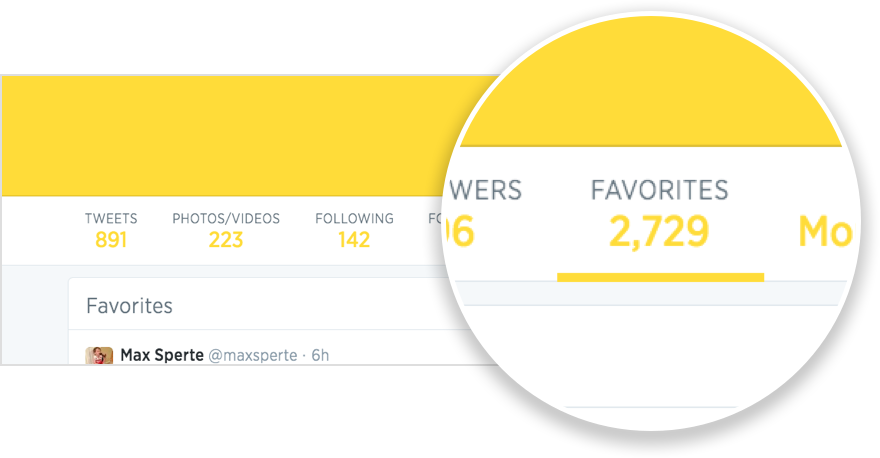
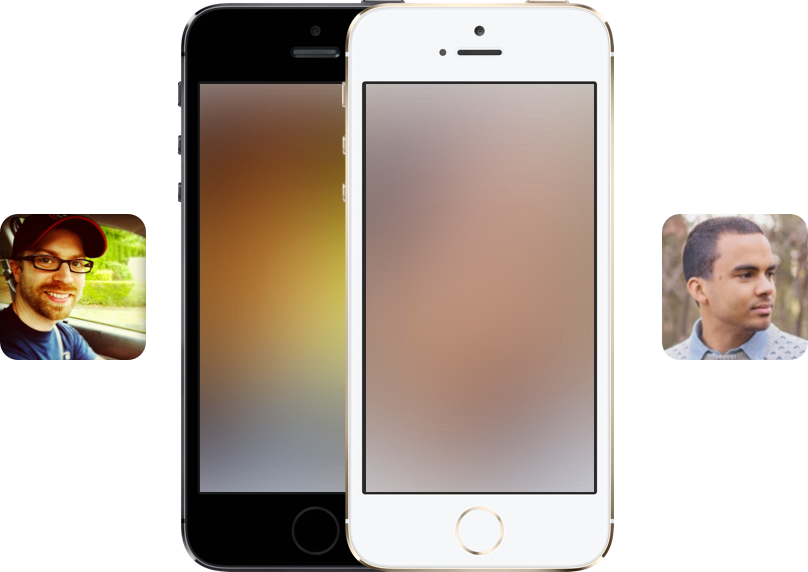

B.Y.O.F.
Starbird utilizes Twitter Lists to track who you’re watching, so you can bring your own Favoriters.

Starbird surfaces the best of Twitter by only showing tweets that have already been favorited.
Benefit from the curation of others who favorite tweets, even if they never tweet themselves.
Starbird utilizes Twitter Lists to track who you’re watching, so you can bring your own Favoriters.
As expected, you can do all the normal interactions, too: Favorite, Retweet, and Reply.
Starbird matches your personality by blurring your profile image for its background.
Here’s a live list of the most watched Favoriters from Starbird users…